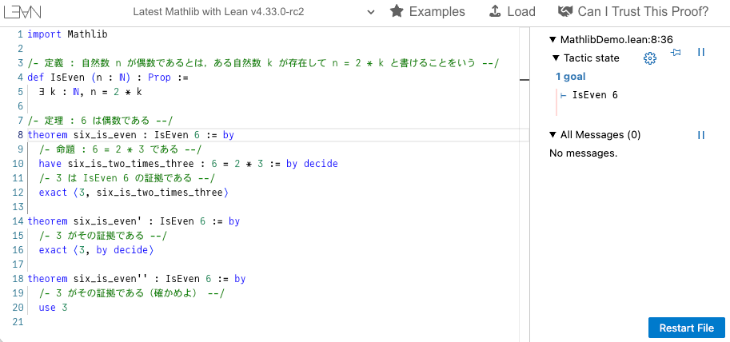
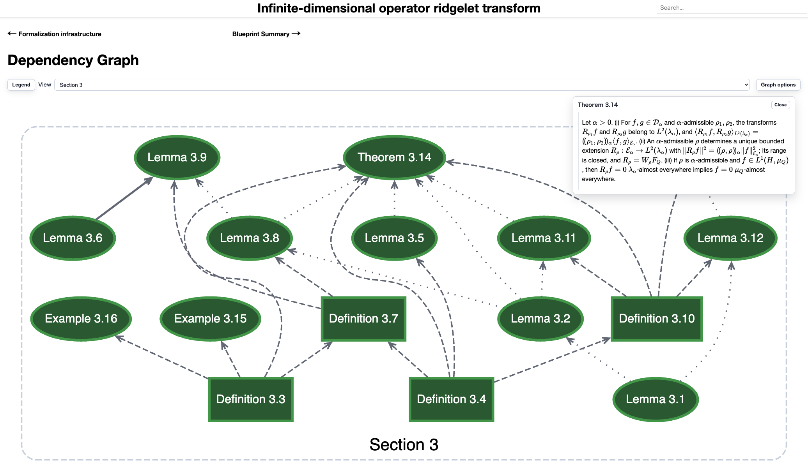
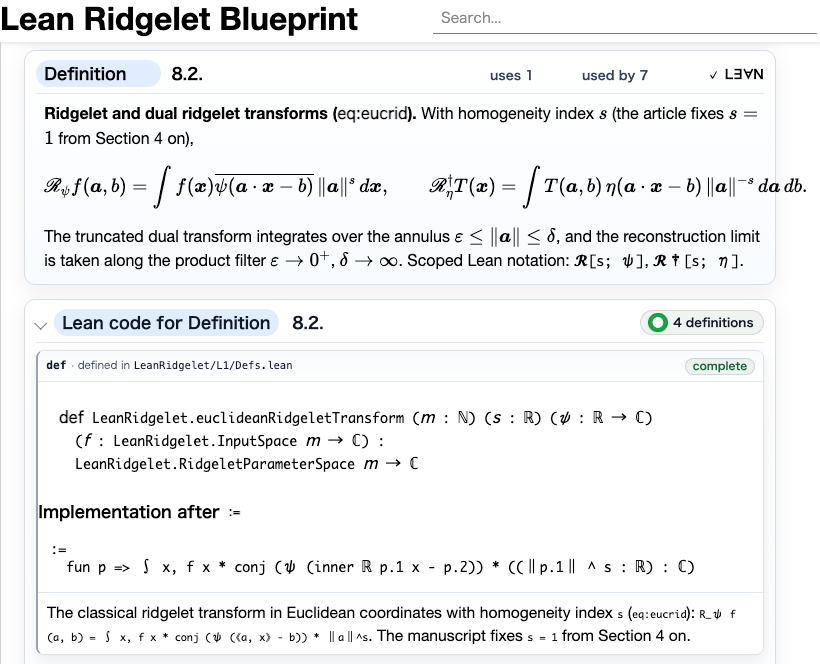
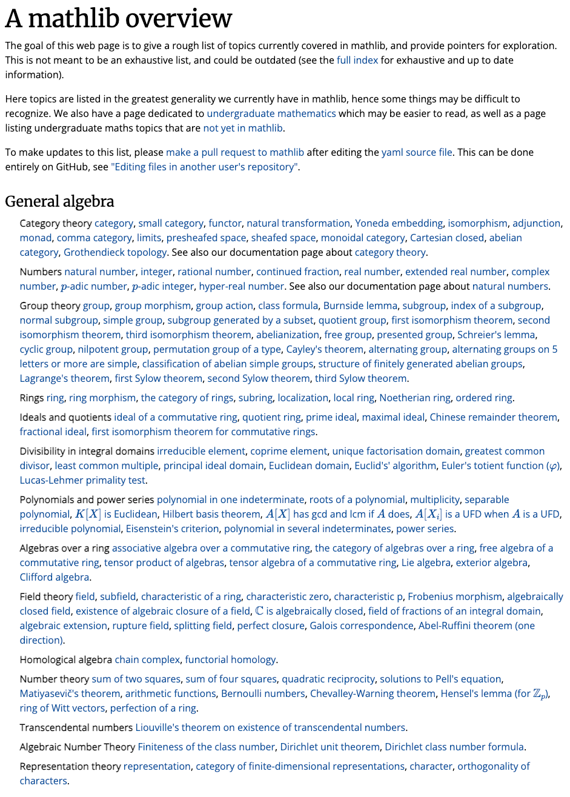

Leanによる形式数学入門
今日の内容
- Lean で何ができるか
Lean とは，例，対話的な証明，形式化の利点と到達範囲 - 形式証明の仕組み
行間を埋める，推論規則，型と項，Curry–Howard 対応，タクティック - Lean の仕組み
定理と定義の書き方，依存型，Lean の内部，単一化，定義的等価 - なぜ・いつ信頼できるか
カーネルと公理，無矛盾性，ジャンク値，lake comparator - AI を使わない形式化
環境構築，lake new … math，日々の作業，Mathlib の読み方 - AI を使った形式化
LeanArchitect と Comparator を使うように指示して，待つ - 具体例
物理数学（正準交換関係，Fourier 変換），制御理論（Lyapunov 関数） - 実際の形式化事例
Mathlib，Lean Rademacher，Lean Ridgelet，Fermat の最終定理，Navier–Stokes，Physlib，Riemann 予想の検証
この講義の問い
他人（や AI）が書いた Lean の証明を，なぜ・いつ信じてよいのか．
持ち帰ってほしいこと
- 形式証明は，証明の行間を推論規則だけで埋めたもの．検査は機械的な計算（型検査）になる
- 信頼すべきものは小さい：カーネル，公理，定理の主張
- だから証明は読まなくてよい．人間は「主張が意図どおりか」を読む
Lean を「書ける」ようになるには時間がかかるので，今日は「読める・確かめられる」ことを目標にする．
スライド中の Lean コードは Lean 4.36.0 / Mathlib v4.36.0 で動作を確認した（2026-11-23）．各プロジェクトから引用したコードは，それぞれのリポジトリが固定している版のもの．
Lean で何ができるか
定義・定理・証明を書くと，計算機が証明を検査する
Lean とは
def, structure, inductive, class で数学的対象を定義する
命題論理・述語論理を使って，主張（仮定と結論）を書く
三段論法，場合分け，帰納法，背理法などの推論を 1 ステップずつ書く
- Lean 4：プログラミング言語であり，対話型の定理証明支援系
L. de Moura らが開発．2023 年から Lean FRO が開発を担う - 論理は依存型理論（型の中に値が現れてよい型理論）
- Mathlib：コミュニティが育てている数学ライブラリ
代数，解析，測度論，確率論，位相，…
例：6 は偶数である
import Mathlib
/-- 定義：自然数 n が偶数であるとは，
ある自然数 k が存在して n = 2 * k と書けること． -/
def IsEven (n : ℕ) : Prop :=
∃ k : ℕ, n = 2 * k
/-- 定理：6 は偶数である． -/
theorem six_is_even : IsEven 6 := by
-- 主張：6 = 2 * 3
have six_eq : 6 = 2 * 3 := by decide
-- 3 が IsEven 6 の証拠である
exact ⟨3, six_eq⟩
/-- 同じ定理．証拠 3 だけ渡して，残りは Lean に任せる． -/
theorem six_is_even' : IsEven 6 := by
use 3読み方
IsEvenは，自然数を受け取って命題を返す関数（述語）defが定義，theoremが定理，:=の後が証明（書き方は第 3 部）byの後はタクティック（証明の 1 ステップ）の列⟨3, six_eq⟩は「証拠 3」と「3 が条件を満たすことの証明」の組decide,useは計算で確かめられることを自動で埋める
対話的に証明する
def IsEven (n : ℕ) : Prop :=
∃ k : ℕ, n = 2 * k
theorem six_is_even : IsEven 6 := by
have six_eq : 6 = 2 * 3 := by decide
exact ⟨3, six_eq⟩⊢ IsEven 6まだ仮定はない．
six_eq : 6 = 2 * 3
⊢ IsEven 6補題 six_eq が使えるようになった．ゴールは同じ．
No goalsゴールがすべて閉じた．
- エディタ（VS Code）の右側 Infoview に，カーソル位置でのゴールが表示される
⊢の上：いま使える変数と仮定（ローカルコンテキスト $\Gamma$）
⊢の下：これから示すこと- タクティックを 1 行書くたびに，ゴールが書き換わる
上の図は Infoview の表示を再現したもの．コードの行をクリックするか，◀ ▶（キーボードでは [ ]）で進められる．

形式化できると何が嬉しいか
- 定理の主張（仮定と結論）が曖昧さなく定まる
- 証明の正しさを機械的に検証できる
- 知識を再利用できる形で蓄積できる 例：Mathlib
- 証明の構造が見える 例：blueprint，依存グラフ
- 証明を整理する過程で，隠れた仮定やより強い主張が見つかる
- AI の検証器になる：AI が 1 人で試行錯誤でき，誤った証明は決して通らない


どこまで形式化できるか
- 現代の（典型的な）数学は記述できる
- 依存型理論：Lean，Rocq (Coq)，Agda
- 高階論理：Isabelle/HOL，HOL Light
- 集合論：Mizar，Metamath
- 数学ライブラリ
- Mathlib (Lean)：代数，位相，解析，確率，幾何，組合せ論，論理，…
- MathComp (Rocq)，AFP (Isabelle)，MML (Mizar)
- Mathlib の外（Lean）
- Reservoir：Lean パッケージの索引
- CSLib（計算機科学），Physlib（物理学），StatMLlib（統計・機械学習）
- Formal Conjectures（Google DeepMind）：未解決問題を Lean の主張として集めたもの
- 国内の事例：Lean Rademacher（統計的学習理論），Lean Quantum（量子情報），Lean Ridgelet（関数解析），Leray–Hopf 対訳ノート（微分方程式），測度論と積分，東大数学 2026

形式証明の仕組み
証明の行間を，推論規則だけで埋める．原理的には，紙と鉛筆でできる
形式証明とは：証明の「行間」を埋める方法
ふつうの証明（教科書・論文）
命題．偶数と偶数の和は偶数である．
証明．$m = 2a$，$n = 2b$ と書ける．すると $m + n = 2(a + b)$．よって $m + n$ は偶数．$\blacksquare$
- 色を付けた言葉の裏に，書かれていない推論がある（行間）．「明らかに」「同様に」「計算すると」も同じ
- 行間が正しく埋まるかどうかの判断は，読者（査読者）に委ねられている
形式証明
主張と公理（および定義，すでに示した定理）を，あらかじめ決めた推論規則だけでつないだもの．行間が 1 つも残っていない証明．
- 推論規則は，十数個の決まった型（次ページ：自然演繹）
- 各ステップで「どの規則を，どこに使ったか」まで書く．それ以外の飛躍は許されない
自然演繹の推論規則 (1)：命題論理
$\Gamma \vdash P$ は「仮定 $\Gamma$ のもとで $P$ が導ける」と読む（Infoview の ⊢ と同じ）．横線の上が前提，下が結論．導入は示し方，除去は使い方．
| 規則 | 図式 | 数学での言い回し（例） | |
|---|---|---|---|
| $\to$ | $\to$ 導入 | $\dfrac{\Gamma,\ P \vdash Q}{\Gamma \vdash P \to Q}$ | 「$n$ は偶数と仮定する．…ゆえに $n^2$ は偶数」で，「偶数の 2 乗は偶数」を示す |
| $\to$ 除去三段論法 | $\dfrac{\Gamma \vdash P \to Q \quad \Gamma \vdash P}{\Gamma \vdash Q}$ | 「微分可能ならば連続である．$f$ は微分可能である．ゆえに $f$ は連続である」 | |
| $\land$ | $\land$ 導入 | $\dfrac{\Gamma \vdash P \quad \Gamma \vdash Q}{\Gamma \vdash P \land Q}$ | 「$f$ は単射かつ全射」を示すには，単射性と全射性をそれぞれ示す |
| $\land$ 除去 | $\dfrac{\Gamma \vdash P \land Q}{\Gamma \vdash P}\quad \dfrac{\Gamma \vdash P \land Q}{\Gamma \vdash Q}$ | 「$f$ は全単射である．特に単射である」 | |
| $\lor$ | $\lor$ 導入 | $\dfrac{\Gamma \vdash P}{\Gamma \vdash P \lor Q}\quad \dfrac{\Gamma \vdash Q}{\Gamma \vdash P \lor Q}$ | 「$x > 0$ である．したがって $x \ge 0$（$x > 0$ または $x = 0$）である」 |
| $\lor$ 除去場合分け | $\dfrac{\Gamma \vdash P \lor Q \quad \Gamma,\ P \vdash R \quad \Gamma,\ Q \vdash R}{\Gamma \vdash R}$ | 「$x \ge 0$ のとき…．$x < 0$ のとき…．いずれの場合も $|x| \ge x$」 | |
| $\lnot$ | $\lnot$ 導入 | $\dfrac{\Gamma,\ P \vdash \bot}{\Gamma \vdash \lnot P}$ | 「$\sqrt2$ が有理数であると仮定すると矛盾する．ゆえに $\sqrt2$ は有理数でない」 |
| 矛盾$\lnot$ 除去，$\bot$ 除去 | $\dfrac{\Gamma \vdash P \quad \Gamma \vdash \lnot P}{\Gamma \vdash \bot}\quad \dfrac{\Gamma \vdash \bot}{\Gamma \vdash Q}$ | 「これは仮定に矛盾する」．矛盾（$\bot$）からは，どんな命題も導ける（爆発律）． 爆発律は，直観主義論理でも採用する | |
| 古典論理どれか 1 つを加える | $\dfrac{\Gamma,\ \lnot P \vdash \bot}{\Gamma \vdash P}$背理法$\dfrac{\Gamma \vdash \lnot\lnot P}{\Gamma \vdash P}$二重否定除去$\dfrac{}{\ \Gamma \vdash P \lor \lnot P\ }$排中律 | 「解が存在しないと仮定すると矛盾する．ゆえに解は存在する」（肯定が出る） この 3 つは，直観主義論理の上で互いに同値．どれを加えても同じ |
直観主義論理は，上の表から最後の行を除いた規則（爆発律は含む）だけの論理． 同値であること：背理法と二重否定除去は，$\lnot$ 導入と $\lnot$ 除去で互いに導ける． 排中律から二重否定除去は，「$P$ ならそのまま．$\lnot P$ なら $\lnot\lnot P$ と矛盾し，爆発律で $P$」． 逆は，$\lnot\lnot(P \lor \lnot P)$ が直観主義論理で証明できることから出る．
自然演繹の推論規則 (2)：述語論理と等号
| 規則 | 図式 | 数学での言い回し（例） | |
|---|---|---|---|
| $\forall$ | $\forall$ 導入 | $\dfrac{\Gamma \vdash P(x)}{\Gamma \vdash \forall x,\ P(x)}$ $x$ は $\Gamma$ に現れない | 「$\varepsilon > 0$ を任意にとる．…」と書いて，「任意の $\varepsilon > 0$ に対して…」を示す |
| $\forall$ 除去 | $\dfrac{\Gamma \vdash \forall x,\ P(x)}{\Gamma \vdash P(t)}$ | 「すべての $x$ で $f(x) \le M$．特に $x = 0$ として $f(0) \le M$」 | |
| $\exists$ | $\exists$ 導入 | $\dfrac{\Gamma \vdash P(t)}{\Gamma \vdash \exists x,\ P(x)}$ | 「$6 = 2 \cdot 3$．ゆえに $6 = 2k$ となる $k$ が存在する」（$k = 3$ ととればよい） |
| $\exists$ 除去 | $\dfrac{\Gamma \vdash \exists x,\ P(x) \quad \Gamma,\ P(c) \vdash R}{\Gamma \vdash R}$ $c$ は新しい変数 | 「$n$ は偶数だから，$n = 2k$ となる $k$ を 1 つとる．…」 | |
| $=$ | $=$ 導入反射律 | $\dfrac{}{\ \Gamma \vdash t = t\ }$ | 「$t = t$」（同じものは等しい） |
| $=$ 除去代入 | $\dfrac{\Gamma \vdash s = t \quad \Gamma \vdash P(s)}{\Gamma \vdash P(t)}$ | 「$m = 2a$ を代入して，$m + n = 2a + n$」 |
導入と除去
導入規則は，その形の命題の「示し方」．除去規則は，その形の命題の「使い方」． 証明を読み書きするとき，無意識に使い分けている．規則はこれで全部
2 ページで十数個．数学の証明は，どれほど長くても，原理的にはこれらの組み合わせに分解できる．出発点は公理と定義
自然数の公理（帰納法を含む），実数の公理，集合論や型理論の公理． 既知の定理は，すでに公理とつながっているもの．推論規則だけで書いた証明：計算機は要らない
「偶数と偶数の和は偶数」の形式証明（証明図）．横線 1 本が，推論規則 1 回の適用．横線のない葉は，仮定そのもの．
$\mathrm{Even}(n)$：$\exists k,\ n = 2k$
$\Gamma$：$\mathrm{Even}(m),\ \mathrm{Even}(n)$
$\Gamma'$：$\Gamma,\ m = 2a$
$\Delta$：$\Gamma',\ n = 2b$
型と項：すべての式は型をもつ
Lean では a : A と書いて「項 a の型は A である」と読む．
| 項 | 型 | 読み方 |
|---|---|---|
3 | ℕ | 3 は自然数 |
true | Bool | 真偽値（計算で得られるデータ） |
Real.pi | ℝ | $\pi$ は実数 |
fun x => x + 1 | ℕ → ℕ | 自然数から自然数への関数 |
ℕ，ℝ → ℝ | Type | 型そのものも項であり，型をもつ |
Matrix (Fin 2) (Fin 3) ℝ | Type | 2×3 実行列の型 |
2 = 3 | Prop | 命題．偽でも，型としては正しい |
IsEven 6 | Prop | 命題「6 は偶数」 |
six_is_even | IsEven 6 | 命題 IsEven 6 の証明 |
#check 3 -- 3 : ℕ
#check fun x : ℕ => x + 1 -- fun x => x + 1 : ℕ → ℕ
#check 2 = 3 -- 2 = 3 : Prop
#check six_is_even -- six_is_even : IsEven 6
#check IsEven -- IsEven (n : ℕ) : Prop
#check Prop -- Prop : Type#check 式 と書くと，Lean がその式の型を答える（-- の右が Lean の答え）．
- 型の合わない式は，その場でエラーになる．Lean が行う検査は，この「型が合うか」の検査
BoolとPropは別物：true : Boolは計算する値，True : Propは証明する命題
Prop），証明は，命題を型にもつ項として書かれる．なぜ命題を型として扱ってよいのかを，次のページで説明する．
Curry–Howard 対応：自然演繹は，ラムダ計算に対応する
推論規則は，型付きラムダ計算（関数型プログラミング言語の核）で項を作る規則と，1 対 1 に対応する（Curry 1934，Howard 1969）．
| 論理（自然演繹） | 型付きラムダ計算 | Lean での書き方 |
|---|---|---|
| 命題 $P$ | 型 | P : Prop |
| $P$ の証明（導出図） | その型の項（プログラム） | h : P |
| 仮定 $\Gamma$ | 型の付いた変数 | (x : ℕ) (h : P) |
| $\to$ 導入 ／ 除去 | 関数を作る ／ 適用する | fun h => t ／ f h |
| $\land$ 導入 ／ 除去 | 組を作る ／ 成分を取り出す | ⟨hP, hQ⟩ ／ h.1，h.2 |
| $\lor$ 導入 ／ 除去 | 直和に入れる ／ 場合分け | Or.inl h ／ h.elim f g |
| $\forall$ 導入 ／ 除去 | 依存関数（$\Pi$ 型）を作る ／ 適用 | fun x => t ／ h a |
| $\exists$ 導入 ／ 除去 | 依存対（$\Sigma$ 型）を作る ／ 分解 | ⟨a, h⟩ ／ h.elim f |
| $\lnot P$，矛盾 $\bot$ | $P \to \bot$．$\bot$ は項のない型 | P → False |
| 証明が正しい | 項の型が合う | 型検査が通る |
例：三段論法（$\to$ 除去）は関数適用．導出図の各行に，項を書き添えることができる．
theorem hoge (P Q : Prop)
(f : P → Q) (x : P) : Q :=
f xfは「$P$ の証明を受け取って $Q$ の証明を返す関数」．xは $P$ の証明．f xは $Q$ の証明- 読み方：
theorem 名前 (仮定) : 結論 := 証明項（詳しくは第 3 部）
Lean のような「型による証明」は，この対応の上に作られている．
命題と証明の関係は，集合と要素の関係
- 命題 $P$ を「$P$ の証明全体の集合」とみなす．
h : Pは $h \in P$ と読める - 各命題は，
Propという集合族の元である：P : Prop - 真の命題は 1 点集合，偽の命題は空集合に対応する． Lean では，同じ命題の証明はすべて等しいと約束されている（証明無関係性）
- 証明を書く ＝ その集合の要素を 1 つ構成する
-- 同じ命題の 2 つの証明は，つねに等しい
example (P : Prop) (h₁ h₂ : P) : h₁ = h₂ := rfl| 論理 | 集合として読むと |
|---|---|
| $P \to Q$ | $P$ から $Q$ への写像の集合 |
| $P \land Q$ | 直積 $P \times Q$ |
| $\forall x,\ P(x)$ | 直積族 $\prod_x P(x)$ |
空集合からの写像は，行き先が何であってもちょうど 1 つある．これが「偽の仮定からは何でも導ける」にあたる．
タクティック：証明項を自動で組み立てる仕組み
def IsEven (n : ℕ) : Prop := ∃ k : ℕ, n = 2 * k
-- 推論規則を 1 つずつ書いた証明項（紙の上の証明図に対応する）
theorem add_even (m n : ℕ) (hm : IsEven m) (hn : IsEven n) :
IsEven (m + n) :=
Exists.elim hm fun a ha => -- ∃ 除去
Exists.elim hn fun b hb => -- ∃ 除去
Exists.intro (a + b) -- ∃ 導入
(Eq.trans (congrArg₂ (· + ·) ha hb) -- 代入
(Nat.mul_add 2 a b).symm) -- 分配法則
-- 同じ定理を，タクティックで書いた証明
theorem add_even' (m n : ℕ) (hm : IsEven m) (hn : IsEven n) :
IsEven (m + n) := by
obtain ⟨a, ha⟩ := hm -- 「m = 2a と書ける」
obtain ⟨b, hb⟩ := hn -- 「n = 2b と書ける」
exact ⟨a + b, by omega⟩ -- 「すると m + n = 2(a + b)」- 規則を 1 つずつ書き下すのは，計算機の上でも実用的でない
- タクティック：示すべき命題（ゴール）を見て，証明項を組み立てるプログラム．
byの後に書く
| タクティック | 埋める行間 |
|---|---|
intro，apply，exact，obtain | 推論規則 1 つ分 |
rw，simp | 等式による書き換えの列 |
ring，omega，linarith | 計算（数十〜数万ステップ） |
theorem sq_expand (a b : ℝ) :
(a + b) ^ 2 = a ^ 2 + 2 * a * b + b ^ 2 := by
ring
-- ring が組み立てた証明項の大きさ：約 6 万ノードtheorem mp_tac (P Q : Prop) (hPQ : P → Q) (hP : P) : Q := by
apply hPQ
exact hP
#print mp_tac -- タクティックが作った項を表示する
-- theorem mp_tac : ∀ (P Q : Prop), (P → Q) → P → Q :=
-- fun P Q hPQ hP => hPQ hP推論規則とタクティックの対応証明図は上から下へ，タクティックは下から上へ
例：$\Gamma = \{\,P \to Q,\ Q \to R\,\}$ のもとで $P \to R$ を示す．
自然演繹（前向き：仮定から結論へ）
Lean（後ろ向き：ゴールから仮定へ）
- 色は証明図の規則と対応している．タクティックは，証明図を結論の側から組み立てる：
apply hQRは「Rを示すにはQを示せばよい」 - 状態＝ゴール，行動＝タクティック，と見れば，定理証明は探索問題になる（AI による証明もこの見方に基づく）
推論規則 1 つが，項の構成 1 つ，タクティック 1 つに対応する．
| 規則 | タクティック | 項 |
|---|---|---|
| $\to I$ | intro h | fun h => … |
| $\to E$ | apply hPQ，exact hPQ hP | hPQ hP |
| $\land I$ | constructor | ⟨hP, hQ⟩ |
| $\land E$ | obtain ⟨h₁, h₂⟩ := h | h.1，h.2 |
| $\lor I$ | left，right | Or.inl h，Or.inr h |
| $\lor E$ | rcases h with h₁ | h₂ | h.elim f g |
| $\forall I$ | intro x | fun x => … |
| $\forall E$ | specialize h x | h x |
| $\exists I$ | use 3 | ⟨3, h⟩ |
| $\exists E$ | obtain ⟨x, hx⟩ := h | h.elim f |
| $\lnot$，背理法 | by_contra h，exfalso | Classical.byContradiction |
| $=$ | rfl，rw [h] | Eq.refl a，h ▸ t |
Lean の仕組み
定理と定義の書き方から，Lean の内部まで
定理の書き方：theorem 名前 仮定 : 結論 := 証明項
theorem add_even定理名(m n : ℕ) (hm : IsEven m) (hn : IsEven n)仮定（変数と，それについての条件）:IsEven (m + n)結論:=by …証明項- 仮定は
(名前 : 型)の並び．(m n : ℕ)は変数．(hm : IsEven m)は 「$m$ は偶数である」という仮定に，hmという名前を付けたもの :の後が結論，:=の後が証明項（byと書けばタクティックで組み立てる）． 証明項の型が結論と一致するかを，Lean が検査するdef 名前 引数 : 型 := 値と同じ形をしている．定理とは，「結論」という型をもつ値（証明）の定義lemmaはtheoremと同じ．exampleは名前を付けない定理
:= の前だけ読めば，何が主張されているかが分かる．
:= の後（証明）は Lean が検査する．
-- 仮定を ∀ と → で書いても，同じ定理
theorem add_even₂ :
∀ m n : ℕ, IsEven m → IsEven n → IsEven (m + n) :=
fun m n hm hn => add_even m n hm hn
-- 定理は関数．仮定の証明を渡すと，結論の証明が返る
#check add_even 6 6 six_is_even six_is_even
-- add_even 6 6 six_is_even six_is_even : IsEven (6 + 6)
example : IsEven 12 := add_even 6 6 six_is_even six_is_evenadd_evenの型は∀ m n, IsEven m → IsEven n → IsEven (m + n)． 仮定を括弧で書くのは，その略記にあたる- 定理を「使う」とは，関数として引数（具体的な値と，仮定の証明）に適用すること
定義の書き方：structure と型クラス
structure：いくつかのデータと，それが満たす条件を束ねる．数学の「〜の組であって，〜を満たすもの」．
/-- 定義：調和振動子とは，正の質量 m と
正のばね定数 k の組である． -/
structure Oscillator where
m : ℝ
k : ℝ
m_pos : 0 < m
k_pos : 0 < k
/-- 定義：角振動数 ω = √(k/m) -/
noncomputable def Oscillator.ω (S : Oscillator) : ℝ :=
Real.sqrt (S.k / S.m)
/-- 定理：角振動数は正である． -/
theorem Oscillator.ω_pos (S : Oscillator) : 0 < S.ω :=
Real.sqrt_pos.mpr (div_pos S.k_pos S.m_pos)- 条件（
m_pos，k_pos）も成分．S.k_posと書いて証明の中で使える noncomputableは「実行できるプログラムにはならない」という印（実数の平方根）．証明には影響しない
型クラス（class）：型に付随する構造．[MyMonoid M] は「$M$ をモノイドとする」．
/-- 定義：モノイド（結合的な積と単位元をもつ） -/
class MyMonoid (M : Type) where
mul : M → M → M
one : M
mul_assoc : ∀ a b c : M, mul (mul a b) c = mul a (mul b c)
one_mul : ∀ a : M, mul one a = a
mul_one : ∀ a : M, mul a one = a
/-- 例：自然数は，加法と 0 についてモノイドである． -/
instance : MyMonoid ℕ where
mul := (· + ·)
one := 0
mul_assoc := Nat.add_assoc
one_mul := Nat.zero_add
mul_one := Nat.add_zero
open MyMonoid in
/-- 定理：単位元は一意である． -/
theorem MyMonoid.one_unique {M : Type} [MyMonoid M] (e : M)
(he : ∀ a : M, mul e a = a) : e = one := by
rw [← mul_one e, he]instanceで具体例を登録すると，Lean が必要なときに自動で探す- Mathlib の「群 $G$」は
(G : Type) [Group G]．群の公理も定理も，これだけで使える
$\forall$ と $\exists$ は依存型$\Pi$ 型と $\Sigma$ 型
| 値に依存しない | 値に依存する（依存型） | 命題として読むと | |
|---|---|---|---|
| 関数 | α → β | (x : α) → β x $\Pi$ 型 | ∀ x : α, P x |
| 組 | α × β | (x : α) × β x $\Sigma$ 型 | ∃ x : α, P x |
-- Π 型：返り値の「型」が，引数の「値」に依存する
example : (n : ℕ) → Fin (n + 1) := fun n => ⟨0, Nat.succ_pos n⟩
example : ∀ n : ℕ, IsEven (2 * n) := fun n => ⟨n, rfl⟩
-- Σ 型：第 2 成分の「型」が，第 1 成分の「値」に依存する
example : (n : ℕ) × Fin (n + 1) := ⟨5, 3⟩
example : ∃ n : ℕ, IsEven n := ⟨6, six_is_even⟩
example : { n : ℕ // IsEven n } := ⟨6, six_is_even⟩ -- 部分型「偶数全体」∀ n, IsEven (2 * n) の証明は「各 n に対して IsEven (2 * n) の証明を返す関数」．だから全称命題の証明は，関数のように引数に適用して使える．
工学的な御利益：次元は型の一部
example (A : Matrix (Fin 2) (Fin 3) ℝ)
(B : Matrix (Fin 3) (Fin 4) ℝ) :
Matrix (Fin 2) (Fin 4) ℝ :=
A * B -- 2×3 と 3×4 の積は 2×4example (A B : Matrix (Fin 2) (Fin 3) ℝ) :
Matrix (Fin 2) (Fin 3) ℝ :=
A * B
-- error: failed to synthesize instance of type class
-- HMul (Matrix (Fin 2) (Fin 3) ℝ)
-- (Matrix (Fin 2) (Fin 3) ℝ) ?mMatrix (Fin m) (Fin n) ℝは値m,nに依存する型- 次元の合わない積は，証明以前に型エラーで弾かれる
Lean の中で起きていること
.lean
ただの文字列
parse→
Syntax
まだ意味はない
elaboration→
Expr
すべてが明示された項
kernel→
.olean
他のファイルから import できる
精密化（エラボレータ）大きい・拡張できる・信頼しない
人間が省略したものをすべて補って，核言語の項を作る：マクロ展開，型推論，単一化，型クラスの解決，暗黙の引数，型強制，タクティックの実行
カーネル小さい・信頼する
核言語の項だけを見て型検査する．必要に応じて正規化して，2 つの項が等しいかを判定する． タクティックにバグがあって誤った項ができても，ここで拒否される．例：1 + 1 = 2 と書くと，精密化の後は次の項になる（pp.explicit の出力．一部を _ で省略）
@Eq ℕ
(@HAdd.hAdd ℕ ℕ ℕ (@instHAdd ℕ instAddNat)
(@OfNat.ofNat ℕ 1 _) (@OfNat.ofNat ℕ 1 _))
(@OfNat.ofNat ℕ 2 _)+はどの型の加法か，1はどの型の 1 か，を型推論と型クラス解決が決める- 同じ
1 + 1 = 2でも，ℝの上なら別の項（Real.instAddなど）になる - 人間が読むのは左端，カーネルが検査するのは右から 2 番目
用語の整理：項 a と型 A をめぐる問題
項と型が与えられて，合っているかを判定する．
example : IsEven 6 := ⟨3, rfl⟩
-- エラーが出なければ合っている定義を展開して計算し，それ以上進まない形にする．
#reduce 1 + 1 -- 2
#reduce (fun x => x + 1) 2 -- 32 つの項が，計算すれば同じになるか（定義的等価か）を判定する．
example : 1 + 1 = 2 := rfl
-- 1 + 1 を計算すると 2 になるから項から，その型を求める．
#check fun x : ℕ => x + 1
-- fun x => x + 1 : ℕ → ℕ穴 ?a を含む 2 つの式を一致させる代入 σ を求める．
-- ?n + ?m = ?m + ?n と
-- x + y = y + x を一致させる
-- ↦ ?n := x, ?m := y「ℝ の加法」「この型の群構造」など，登録済みの構造を探す．
#synth Add ℝ
-- Real.instAddinstance を探索省略された引数・型・構造を，すべて補う．
-- 1 + 1 = 2 ↦ @Eq ℕ
-- (@HAdd.hAdd ℕ ℕ ℕ _ 1 1) 2型（命題）から，その項（証明）を見つける．
example (a b : ℕ) :
a + b = b + a := by exact?
-- Try this: exact Nat.add_comm a bA が，意図した数学の主張と同じか（形式化，自動形式化）．
これは人間が読むしかない（→ 第 4 部）．
単一化：穴 ?a に何を入れれば，2 つの式が一致するか
?a はメタ変数：「まだ決まっていない項」を表す穴で，Lean が後から埋める．
ふつうの変数 x は「任意に与えられた値」，?a は「これから Lean が決める値」．
例：定理 Nat.add_comm : ∀ n m, n + m = m + n を，ゴール x + y = y + x に使う．
（∀ を穴に置き換える） ?n + ?m = ?m + ?n ゴール x + y = y + x 単一化の解?n := x， ?m := y
-- 形が合わない例：積の可換性に，和の可換性は使えない
example (x y : ℕ) : x * y = y * x := by
apply Nat.add_comm
-- error: Tactic `apply` failed: could not unify
-- the conclusion of `Nat.add_comm`
-- ?n + ?m = ?m + ?n
-- with the goal
-- x * y = y * x働く場所：apply，exact，rw，simp（定理をゴールに合わせる），暗黙の引数の決定（id 3 は @id ?α 3 と読まれ，?α := ℕ と決まる）．
Q. 「$x + 1 = y$ と $x = 1$ から $y = 2$ を導く」のは単一化か
A. いいえ．これは推論（書き換えと計算）である．
- 単一化が決めるのは，穴
?aの中身だけ．xやyはふつうの変数で，値は入らない - 単一化は仮定（
x = 1）を使わない．使うのは，式の形の照合と，定義の展開（計算）だけ - この推論は，仮定による書き換え（$=$ 除去）で行う
-- y を x + 1 に，x を 1 に書き換える．残る 1 + 1 = 2 は計算
example (x y : ℕ) (h₁ : x + 1 = y) (h₂ : x = 1) : y = 2 := by
rw [← h₁, h₂]-- 単一化が「未知のもの」を決める例．`_` は穴で，
-- rfl : ?a = ?a との照合から ?y := 1 + 1 と決まる
example : ∃ y : ℕ, 1 + 1 = y := ⟨_, rfl⟩正規化と，2 種類の「等しい」definitionally equal と外延性
自然数の加法は，第 2 引数についての再帰で定義されている（概略）：
def Nat.add : ℕ → ℕ → ℕ
| n, .zero => n
| n, .succ m => .succ (Nat.add n m)n + 0 ⇝ Nat.add n zero ⇝ n ✓
0 + n ⇝ Nat.add 0 n …n が変数のままでは進まない
| 定義的に等しい definitionally equal |
定義を展開して計算（正規化）すると，同じ項になる．rfl だけで示せ，カーネルが自動で判定する |
| 命題として等しい propositionally equal |
a = b の証明がある．帰納法や補題を使って証明する |
| 外延性 extensionality |
「中身がすべて同じなら等しい」という原理．funext（関数：すべての入力で値が等しい），propext（命題：同値），Set.ext（集合：同じ要素をもつ） |
example : 1 + 1 = 2 := rfl -- OK：計算すれば同じ
example (n : ℕ) : n + 0 = n := rfl -- OK
example (n : ℕ) : 0 + n = n := rfl -- エラー：計算が進まない
example (n : ℕ) : 0 + n = n := by simp -- 命題としては等しい
-- fun n => 0 + n と fun n => n は，すべての n で値が等しい
-- （外延的に等しい）が，定義的には等しくない
example : (fun n : ℕ => 0 + n) = (fun n => n) := rfl -- エラー
example : (fun n : ℕ => 0 + n) = (fun n => n) := by
funext n -- 外延性：各 n で値が等しいことを示せばよい
simp- 定義的等価は定義の書き方に依存する（内包的）．
n + 0と0 + nは値としては同じだが，計算の進み方が違う - 外延性は，Lean では定理か公理：
funextは公理Quot.soundから証明され，propextは公理そのもの - カーネルが黙って認めるのは定義的等価だけ．それ以外の等式には証明項が要る
なぜ・いつ信頼できるか
信頼するのは，小さなカーネルと公理と主張だけ．主張は人間が読む
なぜ信頼できるか：小さなカーネルが証明項を検査する
信頼するもの 小さい
- カーネル：核言語の型検査器．小さく，独立した実装が複数ある
- 公理：Mathlib の証明が使うのは通常，右の 3 つだけ
- 定理の主張と，そこに現れる定義（人間が読む）
- 論理（型理論）そのもの（無矛盾性は次ページ）
信頼しなくてよいもの 大きい
- タクティック，エラボレータ，自動証明器（誤った項はカーネルが拒否する）
- 証明の中身（何万行あっても読まなくてよい）
- 証明を書いた人，書いた AI
独立した実装のカーネル：nanoda（Rust），Lean4Lean（Lean），con-leche，con-ron など．
-- #print axioms：証明が最終的に依存する公理をすべて表示する
#print axioms six_is_even
-- 'six_is_even' does not depend on any axioms
#print axioms no_finite_dim_ccr -- 後で出てくる定理
-- 'no_finite_dim_ccr' depends on axioms:
-- [propext, Classical.choice, Quot.sound]| 公理 | 意味 |
|---|---|
propext | 命題外延性：(P ↔ Q) → P = Q |
Quot.sound | 商型の健全性：同値なものは商で等しい |
Classical.choice | 選択公理：Nonempty α → α（排中律もここから出る） |
Lean の論理そのものは無矛盾かCIC と集合論
型検査が保証するのは「証明が規則に従っている」ことだけ．規則そのもの（型理論）から矛盾が出ないことは，別に示す必要がある．
- 無矛盾：
Falseの証明項が 1 つも存在しないこと．もし存在すれば，爆発律によって，すべての命題が証明できてしまう - Lean の論理は CIC（Calculus of Inductive Constructions：依存型，帰納型，宇宙の階層）の一種に，前ページの 3 つの公理を加えたもの．Rocq (Coq) も CIC に基づく
| 文献 | 示されたこと |
|---|---|
| Werner (1997) | CIC と集合論は，互いに相手を表現できる．CIC の宇宙の個数が，集合論の到達不能基数の個数に対応する |
| Carneiro (2019) | Lean の型理論（3 つの公理を含む）のモデルを，集合論の中に作った．型は集合，項は要素，Prop は $\{\emptyset, \{\ast\}\}$ |
| 合わせると | Lean の型理論は，「ZFC ＋ 各 $n$ について $n$ 個の到達不能基数」と等無矛盾：一方が無矛盾なら，他方も無矛盾 |
| Bresolin–Mamino (2026) | 2 階算術の命題については，両者で証明できるものが一致する |
到達不能基数：ZFC では存在を証明できない，大きな無限．巨大基数の仮定としては弱く，Grothendieck 宇宙の存在と同じ仮定． Carneiro のモデルは，「命題と証明＝集合と要素」の図と同じ見方に立つ．
証明できることの限界
- Gödel の第 2 不完全性定理により，Lean の無矛盾性を Lean の中で証明することはできない
- 示せるのは相対的な無矛盾性．Lean の論理を疑うことは，集合論（ふつうの数学の土台）を疑うことと，ほぼ同じ
この結果が扱っていないもの
- カーネルの実装が，型理論のとおりか（前ページ）．Lean4Lean は，Lean で書いたカーネルの正しさを Lean で証明する試みで，一部が証明済み
- 利用者が足した公理（下の例）
-- 公理は自由に足せる．偽の公理を足せば False が証明できる
axiom bad : (1 : ℕ) = 2
theorem oops : False := absurd bad (by decide)
#print axioms oops -- 'oops' depends on axioms: [bad]「コンパイルが通った」ら安心か
仕様のバグ：主張が，意図したものと違う
- ジャンク値：
x / 0 = 0．微分できない点でderiv f x = 0．可積分でなければ∫ f = 0．非有界なら⨆ i, f i = 0 - 仮定が空虚（
0 < 0など），あるいは結論と同じくらい強い - 定義が，標準的なものと食い違っている
実装のバグ：証明が，本当は証明になっていない
sorry，新しいaxiom，native_decide，unsafe，implemented_by- カーネルのバグ
| 心配 | 道具 |
|---|---|
| どの公理に依存？ | #print axioms |
sorry は残っていない？ | ビルド時の警告．#print axioms に sorryAx |
| カーネルのバグ？ | 別実装のカーネルで再検査（nanoda など） |
| 主張がすり替わっていない？ | Comparator：信頼できる主張と比較する |
| 主張の意味は正しい？ | blueprint（LeanArchitect）：LaTeX と Lean を並べて，人間が読む |
ジャンク値：証明は正しいが，主張が意図と違う例
Mathlib の無限和 ∑' は全域関数で，収束しない級数の和は 0 と定義されている．
したがって次は Mathlib の「定理」であり，カーネルも通り，公理も標準の 3 つだけ：
import Mathlib
/-- 「調和級数の和は 0 である」 -/
theorem harmonic_tsum : ∑' n : ℕ, (1 : ℝ) / n = 0 := by
apply tsum_eq_zero_of_not_summable
simpa using Real.not_summable_natCast_inv
/-- 「|x| の x = 0 での微分係数は 0 である」 -/
theorem deriv_abs_at_zero : deriv (fun x : ℝ => |x|) 0 = 0 := by
apply deriv_zero_of_not_differentiableAt
exact not_differentiableAt_abs_zero
#print axioms harmonic_tsum
-- 'harmonic_tsum' depends on axioms:
-- [propext, Classical.choice, Quot.sound]- Lean も Comparator も別実装のカーネルも，この証明を正しく受理する（実際，正しい）
- 食い違っているのは，Lean の主張と，人間が docstring から想像する主張
- この食い違いは，どの検査器にも見えない．気づけるのは主張を読む人間だけ
対策
- 主張に
Summable，Integrable，DifferentiableAt，BddAboveなどの仮定を明示する - ジャンク値のない型（
ℝ≥0∞など）を使う - AI には「論文の主張から変えた点」を記録させ，それを読む
発散級数に値を割り当てる計算（総和法，正則化）を使うときは，その方法を定義として明示することになる．
どのように信頼するか：lake comparator
場面：主張は自分が書き，証明は信頼できない相手（学生，競争相手，AI）が持ってくる．
import Mathlib
theorem sum_first_odds (n : ℕ) :
∑ i ∈ Finset.range n, (2 * i + 1) = n ^ 2 := sorryimport Mathlib
import MyLibrary
theorem sum_first_odds (n : ℕ) :
∑ i ∈ Finset.range n, (2 * i + 1) = n ^ 2 := by
induction n with
| zero => rfl
| succ k ih => rw [Finset.sum_range_succ, ih]; ring{ "challenge_module": "Challenge", "solution_module": "Solution",
"theorem_names": ["sum_first_odds"],
"permitted_axioms": ["propext", "Quot.sound",
"Classical.choice"] }lake comparator
# ...
# Your solution is okay!受理された（終了コード 0）なら，theorem_names に挙げた各定理について
- Solution は Challenge と同じ主張を証明している
- 証明は，許可した公理以外を使っていない
- 証明は Lean のカーネルに受理される
（設定すれば，外部のカーネルにも）
lake comparator として同梱されている．
permitted_axioms に既定値はない．「何を公理として認めるか」が判定の意味そのものなので，出題者が明示する．
lake comparator の仕組み
sorry）permitted_axioms に含まれるか（sorryAx や持ち込んだ axiom はここで落ちる）
.olean は信用しない）．external_kernels に nanoda などを足せる
信頼するもの
- Challenge とその import（主張の「語彙」）
- Lean のカーネル（か，併用したカーネルのどれか）
- サンドボックス，OS，Mathlib のキャッシュ
信頼しないもの
- Solution が import・ビルドするものすべて
- タクティック，エラボレータ，
.olean
- ビルド中は Solution 側のコードが実行されうるので，ネットワークを遮断し，ホームディレクトリを隠した箱の中で行う
--paranoid：同梱の外部検査器（leanchecker-paranoid，lean4lean，nanoda，con-leche，con-ron）もすべて実行する--solution-from-export：別の計算機で作ったエクスポートを判定だけする（巨大な証明向け）
他人が書いた Lean の証明を，いつ信じてよいか
| 確かめること | 方法 | 検査するもの | |
|---|---|---|---|
| 1 | 主張は，意図した数学の主張か | 定理の主張と，そこに現れる定義を読む．短く，Mathlib の語彙だけで書かれているほどよい | 人間 |
| 2 | 証明に穴はないか | 手元でゼロからビルドする．エラーなし，sorry なし | Lean |
| 3 | 余計な公理を使っていないか | #print axioms の結果が propext，Quot.sound，Classical.choice だけ | Lean |
| 4 | 主張がすり替わっていないか | 信頼できる主張（Challenge）を別に用意し，lake comparator で比較する | Comparator |
| 5 | カーネルのバグではないか | 別実装のカーネル（nanoda，lean4lean など）でも再検査する | 外部の検査器 |
| 6 | 定義は妥当か ジャンク値，規約，論文との対応 |
定義を数学として読む．blueprint で LaTeX と見比べる．専門家が査読する | 人間 |
なぜ信じられるか
- 形式証明には行間がない．検査は，推論規則に合っているかを見るだけの計算（型検査）
- その計算をするのは，小さなカーネル．証明の書き手（人，AI，タクティック）を信頼する必要がない
- 検査は誰でも再実行できる
それでも保証されないこと
- 定理の名前と docstring（どちらも検査されない）
- Lean の主張が，論文や教科書の主張と同じであること
- 途中の補題が，名前のとおりの意味であること
- その定理が新しいこと，重要であること
証明が何万行あっても，人間が読む量は 1 と 6 だけ．逆に言えば，1 と 6 が長く複雑な形式化は，信じるための手間が大きい．
AI を使わない形式化
環境を作り，lake new … math でプロジェクトを始め，ゴールを見ながら 1 行ずつ書く
lake new my_project math
準備：環境構築（公式の手順どおり）
- VS Code を入れる
- 拡張機能 Lean 4（
leanprover.lean4）を入れる - 拡張機能の Setup Guide に従う
→ elan（Lean のバージョン管理）と lake（ビルドツール）が入る
公式：lean-lang.org/install ／ 日本語の手順書（チェックリスト，リカバリー，Codespaces）：shosonoda.github.io/lean-install
プロジェクトを作る
lake new my_project math # Mathlib つきのひな形を作る
cd my_project
lake build # 自分のファイルをビルドする
code . # VS Code で開くmath は「Mathlib に依存するプロジェクト」のひな形．Lean 4.36 では，この 1 行で依存関係の解決とビルド済みの Mathlib の取得まで行われる
（後から取り直すときは lake exe cache get）．
Mathlib を自分でビルドしないこと（数時間かかる）．ディスクは約 7 GB 必要．
my_project/
lakefile.toml # パッケージ名，依存ライブラリ
lean-toolchain # Lean のバージョン（v4.36.0）
lake-manifest.json # 依存ライブラリの版を固定したもの
MyProject.lean # ルート．すべてのファイルを import する
MyProject/
Basic.lean # モジュール MyProject.Basic
.lake/ # ビルド結果と依存ライブラリ
.github/workflows/ # GitHub Actions（CI）の設定import Mathlib
def IsEven (n : ℕ) : Prop := ∃ k : ℕ, n = 2 * k
theorem six_is_even : IsEven 6 := by
use 3- ファイルのパスがモジュール名になる：
MyProject/Basic.lean↔import MyProject.Basic - Lean はバージョンを厳密に合わせる．
lean-toolchainを elan が読んで自動で切り替える
日々の作業
- 主張を書く（証明は
sorry）— ここが一番難しい - ゴールを見る：Infoview を見ながら 1 行ずつ進める
- 補題を探す
- Lean の中で：
exact?，apply?，rw?，simp? - 検索：Loogle（型のパターン），LeanSearch（自然言語），Mathlib のドキュメント
- 名前から推測：
add_comm，mul_le_mul_left，integral_add
- Lean の中で：
- 退屈な部分は自動化に任せる
simp，ring，linarith，nlinarith，positivity，omega，norm_num，fun_prop，aesop，grind - 聞く：Lean Zulip（#new members）
example (a b : ℝ) : a * b ≤ (a ^ 2 + b ^ 2) / 2 := by
nlinarith [sq_nonneg (a - b)] -- (a - b)² ≥ 0 を使えば示せる
example (s : Finset ℕ) : ∑ i ∈ s, (2 * i) = 2 * ∑ i ∈ s, i := by
rw [Finset.mul_sum] -- 定数倍を和の外に出す
example (f : ℝ → ℝ) (hf : Continuous f) :
Continuous fun x ↦ f (x + 1) := by
fun_prop -- 連続性などを自動で示す学習資料
- 数学系エンドユーザーのための Lean 入門（講義ノート．命題論理から測度論・積分まで）
- Mathematics in Lean（Avigad–Massot），Theorem Proving in Lean 4
- ゼロから始める Lean 言語入門（井上亜星，ラムダノート），Lean by Example（日本語）
- The Lean Language Reference（公式リファレンス）
Mathlib の読み方
- 構造は型クラスで表す：「群 $G$」は
(G : Type*) [Group G]．
「$K$ 上のベクトル空間 $V$」は[Field K] [AddCommGroup V] [Module K V] - 写像や部分対象は束ねて扱う：
G →* H（群準同型），V →ₗ[K] W（線形写像），Submodule K V（部分空間） - 極限はフィルターで書く：
Tendsto f atTop (𝓝 L)は「$n \to \infty$ で $f_n \to L$」 - 測度論：
Measure Ω，IsProbabilityMeasure μ，∫ x, f x ∂μ（Bochner 積分） - 全域関数とジャンク値：割り算も微分も積分もどこでも定義されている．
その代わり，定理の側に仮定（
DifferentiableAt，Integrableなど）が付く - 命名規則：
結論_of_仮定．例：le_of_lt，Integrable.of_bound
確率空間 $(\Omega, \mu)$ 上の可積分な確率変数 $X$ について $\mathbb{E}[X + c] = \mathbb{E}[X] + c$：
open MeasureTheory ProbabilityTheory
example {Ω : Type*} [MeasurableSpace Ω] (μ : Measure Ω)
[IsProbabilityMeasure μ] (X : Ω → ℝ) (hX : Integrable X μ)
(c : ℝ) : μ[fun ω ↦ X ω + c] = μ[X] + c := by
simp [integral_add hX (integrable_const c)]$f_n \to L$ ならば $2 f_n \to 2L$：
open Filter in
example (f : ℕ → ℝ) (L : ℝ) (h : Tendsto f atTop (nhds L)) :
Tendsto (fun n ↦ 2 * f n) atTop (nhds (2 * L)) :=
h.const_mul 2integral_add は 2 つの被積分関数がどちらも可積分であることを要求する．「$X$ は可積分」と「定数は可積分」を渡している．
AI を使った形式化
LeanArchitect と Comparator を使うように指示して，待つ
Lean を書く 2 種類の AI
証明器（Lean 専用に訓練したモデル）
- DeepSeek-Prover，Kimina-Prover，Goedel-Prover，Seed-Prover，Aristotle（Harmonic），Gauss（Math Inc）など
- ベンチマーク：miniF2F（高校），PutnamBench（学部），Formal Conjectures（未解決問題）
- 与えられた主張の証明を探索する．Lean が報酬信号
コーディングエージェント（汎用）
- Claude Code，Codex など
- 定義も書く．ファイルを整理し，スクリプトを走らせ，blueprint も書く
- 論文をまるごと形式化する現在のやり方は，こちら
なぜ Lean は AI と相性が良いか
- カーネルは誤った証明を決して受理しない
→ エージェントを監視なしで何時間も走らせられる - エラーメッセージとゴールが，正確なフィードバックになる
- Mathlib が語彙を提供する．エージェントも人間と同じ道具で検索する
進め方：指示して，待つ
エージェントに渡すもの：① 論文（LaTeX ソース），② LeanArchitect と Comparator を組み込んだプロジェクトのひな形，
③ 規約を書いたファイル（AGENTS.md），④ 指示
添付の論文の定理 1〜3 を，このプロジェクトで形式化してください．
- 定義は Defs.lean，定理は Main.lean に置く．
- すべての定義と定理に
@[blueprint "ラベル" (statement := /-- LaTeX -/)]
を付ける．ラベルは論文のものを使う．証明の各段階に
docstring で説明を書く．
- sorry と新しい axiom は使わない．#print axioms の結果は
propext, Classical.choice, Quot.sound だけであること．
- 終わったら，Challenge.lean（主張のみ．Defs だけを import），
Solution.lean，comparator.json を書き，lake comparator を
実行して結果を記録する．
- 論文の主張から変えた点は，すべて ToDraft.md に記録する．あとは待つ（論文によって数分〜数日）．その間エージェントは
- 論文を読み，モジュール構成を計画する
- 1 ファイルずつ
lake env leanで確かめ，lake buildで全体を確かめる - Mathlib を検索し，足りない補題は自分で証明する
- 論文どおりには示せなかった箇所を記録する
（仮定を足した，主張が誤っていた，など） - blueprint を生成し，Comparator を実行し，結果のページを作る
- ファイル単位でサブエージェントに分担させる
ディレクトリ構成，AGENTS.md，ToDraft.md は我々のひな形（TempLeanArchitect）の取り決めで，Lean や Lake が要求するものではない．
LeanArchitect：blueprint を Lean のソースから作る
import Mathlib
import Architect
@[blueprint "def:is-even"
(statement := /-- $n = 2k$ となる $k$ があるとき，$n$ は偶数という． -/)]
def IsEven (n : ℕ) : Prop := ∃ k : ℕ, n = 2 * k
@[blueprint "thm:double-even"
(statement := /-- 任意の $n$ について $2n$ は偶数である． -/)]
theorem double_even (n : ℕ) : IsEven (2 * n) := by
/-- $k = n$ ととればよい． -/
exact ⟨n, rfl⟩\chapter{偶数}
\inputleannode{def:is-even}
\inputleannode{thm:double-even}@[blueprint]を付けた宣言が，blueprint のノードになる- 依存関係（
\uses）は，主張と証明に現れる定数から自動で推定される - 証明に
sorryがなければ，「証明済み」の印（\leanok）が自動で付く - 証明の中の docstring が，証明の概略になる
LeanArchitect（hanwenzhu/LeanArchitect）と leanblueprint（PatrickMassot/leanblueprint）は Lean 本体とは別の，コミュニティ製のツール．
最後に Comparator で確かめる
import MyProject.Defs
namespace MyProject.Challenge
theorem thm_main (n : ℕ) : IsEven (2 * n) := sorry
end MyProject.Challengeimport MyProject
namespace MyProject.Challenge
theorem thm_main (n : ℕ) : IsEven (2 * n) :=
MyProject.double_even n
end MyProject.Challengelake comparator # comparator.json を読む
# ... Your solution is okay!AI が証明を書いたとき，なぜこれが効くか
- Challenge は短く，人間が読める：論文の主張を，定義モジュールの上で述べただけのもの
- 人間が読むべきものは，Challenge とその import（定義）だけ
- エージェントが書いた何千行もの補題は，人間ではなくカーネルが読む
- 公理も設定で固定される．
sorryや持ち込まれたaxiomがあれば落ちる
- Challenge が何を import するか．Mathlib だけ，が最良．自前の定義モジュールでも，短く査読済みなら可
- 主張を誰が書いたか．第三者が書いたもの，教科書の主張を一字一句写したものが望ましい
それでも人間が確認すること
- 主張：Challenge と定義モジュールを，数学として読む．仮定は論文と同じか．空虚な仮定はないか．定義が弱いものにすり替わっていないか
- ジャンク値：可積分でない関数の積分，非有界な上限，ゼロ除算．エージェントは正しい仮定を足したか．それとも既定値を悪用したか
- 名前と docstring：これらは何も検査されない．
main_theoremやriemann_hypothesisという名前の定理が，どんな主張の上にも置ける． 「名前と主張が食い違うときは，証明されたのは主張のほうである」（FLT の README） - 論文からの逸脱：これを記録する道具はない．変えた主張をすべて記録させて，読む．エージェントが論文どおりに証明できなかった主張は，しばしば論文の本当の誤りである
- 残った
sorry：主結果ごとに#print axioms．ライブラリ全体については，全宣言を許可リストと照合するスクリプトを書かせて CI で回す
具体例：物理数学と制御理論
よく知られた事実を Lean で述べ，証明してみる．何を仮定し，何を示したかが主張に現れる
物理数学の例 (1)：正準交換関係は有限次元では実現できない
量子力学の正準交換関係
$$ [X, P] = XP - PX = i\hbar\, I $$を満たす $n \times n$ 行列 $X, P$ は存在しない．
左辺：$\mathrm{tr}(XP) = \mathrm{tr}(PX)$ なので $0$．
右辺：$\mathrm{tr}(i\hbar I) = i\hbar\, n \neq 0$．矛盾．$\blacksquare$
- だから位置と運動量は，無限次元空間上の（非有界な）作用素でなければならない
- Lean の証明は，紙の証明と同じ 3 行
[NeZero n]（$n \neq 0$）を忘れると，証明は通らない． $0 \times 0$ 行列では両辺が等しく，主張が偽だから- 公理は標準の 3 つだけ（
#print axiomsで確認）
import Mathlib
open Matrix Complex
/-- 正準交換関係 [X, P] = iħ は，有限次元の行列では実現できない． -/
theorem no_finite_dim_ccr {n : ℕ} [NeZero n] (ħ : ℝ) (hħ : ħ ≠ 0)
(X P : Matrix (Fin n) (Fin n) ℂ) :
X * P - P * X ≠ (I * ħ) • (1 : Matrix (Fin n) (Fin n) ℂ) := by
intro h
-- 両辺のトレースをとる
have ht := congrArg trace h
-- 左辺：tr(XP) = tr(PX) なので 0．右辺：iħ · n
rw [trace_sub, trace_mul_comm, sub_self, trace_smul, trace_one] at ht
-- 0 = iħ · n は，ħ ≠ 0 かつ n ≠ 0 に矛盾する
simp [hħ, NeZero.ne n] at ht| 紙の証明の 1 歩 | Lean |
|---|---|
| 「等式が成り立つと仮定する」 | intro h |
| 「両辺のトレースをとる」 | congrArg trace h |
| $\mathrm{tr}(XP) = \mathrm{tr}(PX)$ | trace_mul_comm（Mathlib の補題） |
| 「$i\hbar n \ne 0$ なので矛盾」 | simp [hħ, NeZero.ne n] |
物理数学の例 (2)：級数の計算と Fourier 変換
量子調和振動子の分配関数（$x = \beta\hbar\omega > 0$）：
$$ Z = \sum_{n=0}^{\infty} e^{-x\,(n + \frac12)} = \frac{e^{-x/2}}{1 - e^{-x}} $$open Real in
theorem oscillator_partition (x : ℝ) (hx : 0 < x) :
∑' n : ℕ, exp (-x * (n + 1 / 2))
= exp (-x / 2) / (1 - exp (-x)) := by
-- 各項を「定数 × (e^{-x})^n」の形に直す
have h : ∀ n : ℕ, exp (-x * (n + 1 / 2))
= exp (-x / 2) * exp (-x) ^ n := by
intro n
rw [← exp_nat_mul, ← exp_add]
congr 1
ring
-- 公比 e^{-x} は 1 未満（ここで x > 0 を使う）
have hr : exp (-x) < 1 := exp_lt_one_iff.mpr (by linarith)
-- 等比級数の和の公式
simp_rw [h, tsum_mul_left,
tsum_geometric_of_lt_one (exp_pos _).le hr]
rfl紙の計算と同じ 3 歩（項の変形，公比の確認，等比級数の公式）．「公比が 1 未満」は省略できない：
公式 tsum_geometric_of_lt_one が証明 hr を要求し，そこで仮定 $x > 0$ が使われる．
Gauss 関数 $e^{-\pi x^2}$ は，Fourier 変換で自分自身に移る：
open Real Complex FourierTransform in
theorem fourier_gaussian_self :
(𝓕 fun x : ℝ => cexp (-π * x ^ 2))
= fun t : ℝ => cexp (-π * t ^ 2) := by
simpa using fourier_gaussian_pi (b := 1) (by simp)Mathlib の定理 fourier_gaussian_pi（$e^{-\pi b x^2}$ の Fourier 変換．仮定 0 < b.re）に $b = 1$ を代入しただけ．
| 物理でよく使う道具 | Mathlib での名前 |
|---|---|
| 等比級数の和 | tsum_geometric_of_lt_one |
| $\zeta(2) = \pi^2/6$，$\zeta(4) = \pi^4/90$ | hasSum_zeta_two，hasSum_zeta_four |
| Gauss 積分 | integral_gaussian |
| Gauss 関数の Fourier 変換 | fourier_gaussian_pi |
| Hermite 行列の固有値 | Matrix.IsHermitian.eigenvalues |
| スペクトル定理（有限次元） | Matrix.IsHermitian.spectral_theorem |
| 行列の指数関数 | NormedSpace.exp |
| Hilbert 空間，内積 | InnerProductSpace |
| 常微分方程式の解の一意性 | ODE_solution_unique |
Hermite 行列の固有値 eigenvalues は，型が n → ℝ．「観測量の固有値は実数」は，定理というより型に書いてある．
制御理論の例 (1)：エネルギーは Lyapunov 関数
減衰振動子（$\gamma \ge 0$）を状態方程式で書く：
$$ \dot x = v, \qquad \dot v = -\omega^2 x - \gamma v $$Lyapunov 関数の候補として，力学的エネルギーをとる：
$$ E = \tfrac12 v^2 + \tfrac12 \omega^2 x^2, \qquad \dot E = -\gamma v^2 \le 0 $$- $E$ は軌道に沿って単調に減る（安定）
- $\gamma = 0$ なら $\dot E = 0$：エネルギー保存
- 解の存在は仮定している（
hx，hv）．何を仮定し，何を示したかが主張に現れる
/-- 減衰振動子 ẍ = -ω² x - γ ẋ（γ ≥ 0）のエネルギー
E = v²/2 + ω² x²/2 は，時間について単調非増加である． -/
theorem energy_antitone (ω γ : ℝ) (hγ : 0 ≤ γ) (x v : ℝ → ℝ)
(hx : ∀ t, HasDerivAt x (v t) t)
(hv : ∀ t, HasDerivAt v (-ω ^ 2 * x t - γ * v t) t) :
Antitone (fun t => (v t) ^ 2 / 2 + ω ^ 2 * (x t) ^ 2 / 2) := by
-- dE/dt = -γ v² を示す
have hE : ∀ t, HasDerivAt (fun t => (v t) ^ 2 / 2 + ω ^ 2 * (x t) ^ 2 / 2)
(-γ * (v t) ^ 2) t := by
intro t
have h1 := ((hv t).pow 2).div_const 2
have h2 := (((hx t).pow 2).const_mul (ω ^ 2)).div_const 2
convert h1.add h2 using 1
ring
-- 導関数が非正なら，単調非増加
apply antitone_of_deriv_nonpos (fun t => (hE t).differentiableAt)
intro t
rw [(hE t).deriv]
nlinarith [sq_nonneg (v t)]- 微分の計算は，合成関数・和・定数倍の補題（
.pow，.add，.const_mul）を組み合わせる - 残った式の整理は
ring，不等式 $-\gamma v^2 \le 0$ はnlinarithが片付ける
制御理論の例 (2)：Mathlib にある道具，まだない道具
すでにあるもの
| 制御理論での用途 | Mathlib の定理・定義 |
|---|---|
| $\dot x = Ax$ の解 $e^{tA}x_0$ | hasDerivAt_exp_smul_const' |
| 可制御性行列が $A^{n-1}$ までで足りる理由 | Matrix.aeval_self_charpoly（Cayley–Hamilton） |
| LMI の Schur 補行列 | Matrix.PosDef.fromBlocks₁₁ |
| 解の評価，初期値への連続依存 | norm_le_gronwallBound_of_norm_deriv_right_le（Grönwall） |
| 解の存在と一意性 | IsPicardLindelof，ODE_solution_unique |
| 正定値行列 | Matrix.PosDef，Matrix.PosSemidef |
#check @hasDerivAt_exp_smul_const' -- d/dt exp(tA) = A exp(tA)
-- HasDerivAt (fun u => exp (u • x)) (x * exp (t • x)) t
#check @Matrix.PosDef.fromBlocks₁₁ -- Schur 補行列
-- A.PosDef →
-- ((fromBlocks A B Bᴴ D).PosSemidef ↔ (D - Bᴴ * A⁻¹ * B).PosSemidef)まだ見当たらないもの
- Lyapunov 安定性の定義と Lyapunov の定理
- 可制御性・可観測性（Kalman の階数条件）
- Laplace 変換，伝達関数
- Riccati 方程式，LQR
Mathlib v4.36.0（2026 年 11 月）のソースをキーワード検索した範囲での話．Mathlib の外のライブラリは調べていない．
実際の形式化事例
Mathlib と AI による開発 ／ Lean Rademacher ／ Lean Ridgelet ／ Fermat の最終定理 ／ Navier–Stokes と Euler ／ Physlib ／ Riemann 予想の検証
Mathlib の現在
ソースコードの行数の推移
2026 年 11 月 22 日時点．9,522 ファイル，約 251 万行．出典：mathlib.org/mathlib_stats.html
- 1 つのリポジトリ，1 つの
import Mathlib，一貫した型クラスの階層 - すべての変更を，人間のメンテナが査読する．CI と命名・書式のリンタ
- そのため成長は概ね線形（Lean 4 への移植後は，年に 30〜45 万行）． AI で書ける量が増えても，査読の速さは急には変わらない（AI による開発は次ページ）
何があるか（抜粋）
- 代数：群，環，体，加群，多項式，Galois 理論
- 解析：ノルム空間，Fréchet 微分，Bochner 積分，Fourier 変換，Schwartz 空間，$L^p$ 空間
- 確率：独立性，条件付き期待値，マルチンゲール，集中不等式
- 位相，幾何，圏論，数論，組合せ論，論理
まだ薄いところ
偏微分方程式，調和解析の多く，統計的学習理論，制御理論，物理 → これらは Mathlib の外のプロジェクトで進んでいる（以下の事例）
AI による開発は，Mathlib の外で進んでいる
Mathlib は人間が査読する．AI が書いた大量の形式化を受け止めるために，査読の仕方を変えた別のプロジェクトが動いている．
- Lean FRO と Mathlib Initiative が育成中（リポジトリの作成は 2026 年 6 月）
- 人間が書くのはロードマップ（何を形式化するか）と，査読の基準
- 実装は AI．別の AI が敵対的に査読する：定義と主張がロードマップの意図どおりか，再利用できるか
- Mathlib の下流．同じ内容が Mathlib に入れば，そちらに乗り換える
- 目標：研究の前線に届くための「基礎的な数学すべて」
- 完成した形式化を，人間が書いたか AI が書いたかを問わず収録する（arXiv や AFP に近い位置づけ）
- 人手の査読の代わりに，リンタと LLM の判定で品質を保つ．
sorryなし，公理は標準の 3 つ，最新の Mathlib に追従 - 保守も AI エージェントが行う
- 394 プロジェクト，約 1,480 万行（2026-11-23．Mathlib は約 251 万行）
V. Ilin, arXiv:2609.25199
- 利用者がミッション（形式化したい定理）を立て，各自の AI エージェントが証明を持ち寄る
- 主張と証明を別のものとして扱う．1 つの主張に，複数の証明が付いてよい
- 人間が監査する範囲（目標の主張，定義，節目の補題）を先に固定し，残りはエージェントが埋める
- 他のエージェントが示した結果を再利用できる
Chen, Lu, Marwaha, Peng, Yuen, arXiv:2608.28433
Lean Rademacher：定義
関数族 $F \subset \{f : \mathcal{X} \to \mathbb{R}\}$ と標本 $S = (x_k)_{k=1}^n$ に対して
経験 Rademacher 複雑度
$$ \hat{\mathfrak{R}}_n(F; S) = \mathbb{E}_\sigma\Big[\sup_{f \in F}\Big|\frac1n \sum_{k=1}^n \sigma_k f(x_k)\Big|\Big] $$Rademacher 複雑度 $\mathfrak{R}_n(F) = \mathbb{E}_S\big[\hat{\mathfrak{R}}_n(F; S)\big]$
一様偏差（経験誤差と期待誤差の差の上限）
$$ \Delta_n(S) = \sup_{f \in F}\big|\hat{L}_S(f) - L(f)\big| $$github.com/auto-res/lean-rademacher arXiv:2503.19605
塚本，笠浦，恩田，水野，園田（ITP 2026）．統計的学習理論の形式化
def Signs (n : ℕ) : Type := Fin n → ({-1, 1} : Finset ℤ)
def empiricalRademacherComplexity
(n : ℕ) (f : ι → 𝒳 → ℝ) (S : Fin n → 𝒳) : ℝ :=
(Fintype.card (Signs n) : ℝ)⁻¹ *
∑ σ : Signs n, ⨆ i, |(n : ℝ)⁻¹ * ∑ k : Fin n, (σ k : ℝ) * f i (S k)|
def rademacherComplexity
(n : ℕ) (f : ι → 𝒳 → ℝ) (μ : Measure Ω) (X : Ω → 𝒳) : ℝ :=
μⁿ[fun ω : Fin n → Ω ↦ empiricalRademacherComplexity n f (X ∘ ω)]
def uniformDeviation
(n : ℕ) (f : ι → 𝒳 → ℝ) (μ : Measure Ω) (X : Ω → 𝒳)
(S : Fin n → 𝒳) : ℝ :=
⨆ i, |(n : ℝ)⁻¹ * ∑ k : Fin n, f i (S k) - μ[fun ω' ↦ f i (X ω')]|- 関数族は添字の型
ιで表す．μⁿはFin n → Ω上の直積測度 - 符号 $\sigma$ についての期待値は，$2^n$ 通りの有限和として書かれている
- 上限
⨆は，上に有界でなければジャンク値0になる → 定理には有界性の仮定が付く
Lean Rademacher：汎化誤差の上界
証明の道筋：対称化 → McDiarmid の不等式（有界差分）→ 稠密な列を使って，可算族から可分族へ持ち上げる
上限 $\sup_{f \in F}$ の可測性には，可分性・連続性・第 1 可算性が要る． 教科書では暗黙のうちに仮定されている．
ライブラリには他に，McDiarmid の不等式，Massart の補題，Dudley のエントロピー積分（被覆数とチェイニング），$\ell_1$ 制約（lasso）の上界がある．
theorem uniform_deviation_tail_bound_separable_of_pos
[MeasurableSpace 𝒳] [Nonempty 𝒳] [Nonempty ι]
[TopologicalSpace ι] [SeparableSpace ι] [FirstCountableTopology ι]
[IsProbabilityMeasure μ]
(f : ι → 𝒳 → ℝ) (hf : ∀ i, Measurable (f i))
(X : Ω → 𝒳) (hX : Measurable X)
{b : ℝ} (hb : 0 < b) (hf' : ∀ i x, |f i x| ≤ b)
(hf'' : ∀ x : 𝒳, Continuous fun i ↦ f i x)
{ε : ℝ} (hε : 0 ≤ ε) :
(μⁿ (fun ω ↦ 2 • rademacherComplexity n f μ X + ε ≤
uniformDeviation n f μ X (X ∘ ω))).toReal ≤
(- ε ^ 2 * n / (2 * b ^ 2)).exp| 紙の上の仮定 | Lean の仮定 |
|---|---|
| $|f(z)| \le b$ | hf' : ∀ i x, |f i x| ≤ b |
| $F$ は可分 | [SeparableSpace ι] [FirstCountableTopology ι] |
| $f \mapsto f(x)$ は連続 | hf'' : ∀ x, Continuous fun i ↦ f i x |
| 「適当な可測性のもとで」 | hf，hX |
Lean Rademacher：具体例（線形予測器）
重みが有界な線形予測器を，有界な入力の上で考える：
$$ F = \{x \mapsto \langle w, x\rangle : \|w\| \le W\}, \qquad \|x_k\| \le X $$これを前ページの上界に代入すれば，$L^2$ 正則化した線形モデル（リッジ回帰）について，おなじみの $O(1/\sqrt{n})$ の汎化誤差保証が得られる．
- 入力と重みは
EuclideanSpace ℝ (Fin d)の閉球の元 - 証明：Cauchy–Schwarz と Jensen の不等式
- 同じファイルに，$\ell_1/\ell_\infty$（lasso）版もある（$\sqrt{2\log(2d)}$ の因子が付く）
local notation "⟪" x ", " y "⟫" => @inner ℝ _ _ x y
/-- 例：L2 ノルムが有界な線形予測器の，
経験 Rademacher 複雑度の上界． -/
theorem linear_predictor_l2_bound
[Nonempty ι] (d : ℕ) (W X : ℝ) (hx : 0 ≤ X) (hw : 0 ≤ W)
(Y' : Fin n → Metric.closedBall (0 : EuclideanSpace ℝ (Fin d)) X)
(w' : ι → Metric.closedBall (0 : EuclideanSpace ℝ (Fin d)) W) :
empiricalRademacherComplexity
n (fun (i : ι) a ↦ ⟪((Subtype.val ∘ w') i), a⟫) (Subtype.val ∘ Y') ≤
X * W / √(n : ℝ)Metric.closedBall 0 X を型として使っている（部分型）．
「$\|x_k\| \le X$」という仮定が，データの型に組み込まれている．$\Sigma$ 型（部分型）の実例．
docstring は原文（英語）を訳したもの．
Lean Ridgelet：積分表現とリッジレット変換
積分表現：活性化関数 $\eta$，係数 $T(a, b)$ のニューラルネット（双対リッジレット変換）
$$ R^\dagger_\eta T(x) = \int_{\mathbb{R}^m \times \mathbb{R}} T(a, b)\,\eta(a \cdot x - b)\,\|a\|^{-s}\,da\,db $$リッジレット変換：関数 $f$ を $\psi$ で解析する
$$ R_\psi f(a, b) = \int_{\mathbb{R}^m} f(x)\,\overline{\psi(a \cdot x - b)}\,\|a\|^{s}\,dx $$許容定数
$$ K_{\psi,\eta} = (2\pi)^{m-1} \int_{\mathbb{R} \setminus \{0\}} \frac{\overline{\hat\psi(\zeta)}\,\hat\eta(\zeta)}{|\zeta|^m}\,d\zeta $$$K_{\psi,\eta}$ が有限で $0$ でないとき，$(\psi, \eta)$ は許容的という． ReLU，階段関数，tanh も $\eta$ として許される（原点から離れた $\hat\eta$ だけが効く）．
$L^1$ 理論：園田–村田 arXiv:1505.03654 ／ blueprint ／ github.com/shosonoda/lean-ridgelet
/-- パラメータ (a, b) の空間 ℝ^m × ℝ． -/
abbrev RidgeletParameterSpace (m : ℕ) := InputSpace m × ℝ
/-- R_ψ f (a, b) = ∫ x, f x * conj (ψ (⟪a, x⟫ - b)) * ‖a‖^s -/
def euclideanRidgeletTransform (m : ℕ) (s : ℝ) (ψ : ℝ → ℂ) (f : InputSpace m → ℂ) :
RidgeletParameterSpace m → ℂ :=
fun p => ∫ x, f x * conj (ψ (inner ℝ p.1 x - p.2)) * ((‖p.1‖ ^ s : ℝ) : ℂ)
/-- R†_η T (x) = ∫ (a, b), T (a, b) * η (⟪a, x⟫ - b) * ‖a‖^{-s} -/
def euclideanDualRidgeletTransform (m : ℕ) (s : ℝ) (η : ℝ → ℂ)
(T : RidgeletParameterSpace m → ℂ) (x : InputSpace m) : ℂ :=
∫ p : RidgeletParameterSpace m, T p * η (inner ℝ p.1 x - p.2) * ((‖p.1‖ ^ s : ℝ) : ℂ)⁻¹
/-- K_{ψ,η} = (2π)^{m-1} ∫_{ℝ \ {0}} conj (ψ̂ ζ) * Fη ζ / |ζ|^m dζ．
Fη は，原点から離れたところでの η の Fourier 変換． -/
def admissibilityConstant (m : ℕ) (ψ Fη : ℝ → ℂ) : ℂ :=
(2 * Real.pi) ^ (m - 1) *
∫ ζ in {(0 : ℝ)}ᶜ, conj (angularFourier1D ψ ζ) * Fη ζ / ((|ζ| ^ m : ℝ) : ℂ)
def IsAdmissiblePair (m : ℕ) (ψ η Fη : ℝ → ℂ) : Prop :=
Integrable ψ volume ∧ HasFourierAwayFromOrigin η Fη ∧
IntegrableOn (fun ζ => conj (angularFourier1D ψ ζ) * Fη ζ / ((|ζ| ^ m : ℝ) : ℂ))
{(0 : ℝ)}ᶜ volume ∧
admissibilityConstant m ψ Fη ≠ 0- 数式とコードが，ほぼ 1 対 1 に対応する
- ReLU の Fourier 変換は関数としては存在しない．
HasFourierAwayFromOrigin η Fηは「原点から離れた台をもつ試験関数に対してはFηが $\hat\eta$ の役をする」という条件で，超関数を使わずに述べている
Lean Ridgelet：再構成公式の主張と証明
theorem l1_reconstruction_formula (m k : ℕ) [NeZero m]
{ψ η Fη : ℝ → ℂ} {f : InputSpace m → ℂ} {Cη : ℝ}
(hadm : IsAdmissiblePair m ψ η Fη)
(hηk : ∀ z, ‖η z‖ ≤ Cη * (1 + |z|) ^ k) -- η は |z|^k 程度の増大
(hψk : Integrable (fun s : ℝ => (1 + |s|) ^ k * ‖ψ s‖) volume) -- ψ の k 次モーメント
(hψvm : ∀ j ≤ k, (∫ s : ℝ, (s : ℂ) ^ j * ψ s) = 0) -- ψ の k 次までの消失モーメント
(hf : Integrable f volume)
(hfk : Integrable (fun y : InputSpace m => (1 + ‖y‖) ^ k * ‖f y‖) volume)
(hfhat : Integrable (Fourier.angularFourierIntegralInner f) volume) :
(∀ᵐ x ∂(volume : Measure (InputSpace m)),
Filter.Tendsto
(fun q : ℝ × ℝ => truncatedDualRidgeletTransform m 1 η
(euclideanRidgeletTransform m 1 ψ f) q.1 q.2 x)
ridgeletTruncationFilter (𝓝 (admissibilityConstant m ψ Fη * f x))) ∧
∀ x, ContinuousAt f x → Filter.Tendsto (fun q : ℝ × ℝ => …) ridgeletTruncationFilter
(𝓝 (admissibilityConstant m ψ Fη * f x))系（ReLU ネットの万能近似）：そのような任意の $f$ に対し，可積分な $\psi$ と $K \ne 0$ があって $R^\dagger_{\mathrm{ReLU}} R_\psi f = K f$（a.e.）．
無限次元への拡張：shosonoda/lean-operator-ridgelet．原稿の 62 項目を形式化し，341 個の主張を Comparator で検査している．
証明（sorry なし）
- Fourier 切断定理：$b$ について，$R_\psi f(a, \cdot)$ の Fourier 変換は $\overline{\hat\psi(\zeta)}\,\hat f(\zeta a)$
- $b$ についての Plancherel と，$a$ についての極座標変換で，切り詰めた $R^\dagger_\eta R_\psi f(x)$ を円環上の積分に直す
- $\varepsilon \to 0$，$\delta \to \infty$ で優収束定理（ここでモーメントの仮定を使う）
- Fourier 逆変換（a.e.，または連続点で）
- 暗黙の仮定の明確化：元の論文は $\psi$ を Schwartz 関数，$\eta$ を超関数としていた． 関数の水準では，$\eta$ の増大度 $k$ と，$\psi$ の $k$ 次までの消失モーメント条件が必要になる
- 新しい定理の発見：形式化を進める中で，入力空間を無限次元の Hilbert 空間へ拡張した定理が得られた（作用素リッジレット変換）
Fermat の最終定理（Anthropic，2026）
theorem fermat_last_theorem (n : ℕ) (hn : 3 ≤ n) (a b c : ℕ)
(ha : 0 < a) (hb : 0 < b) (hc : 0 < c) :
a ^ n + b ^ n ≠ c ^ n/-- info: 'fermat_last_theorem' depends on axioms:
[propext, Classical.choice, Quot.sound] -/
#guard_msgs in
#print axioms fermat_last_theorem- 証明の道筋は Frey，Serre，Ribet，Wiles，Taylor–Wiles のもの：Frey 曲線，既約性（Mazur），保型性持ち上げ，レベル下げ
- Lean 4.33.1，Mathlib v4.33.0．60,475 モジュール，29,511 定理
- AI エージェントが書いた．土台は人間が書いたオープンソース（Imperial College の FLT プロジェクト，flt-regular，Mathlib）
github.com/anthropics/fermats-last-theorem 参考：手元の Mac Studio（M1 Ultra，20 コア）では，lake build に約 3 日かかった．
3 通りの独立な検査（README より）
| 検査 | 結果 |
|---|---|
ゼロからの lake buildMathlib もソースから | 96 並列で 5 時間 32 分，最大メモリ 153 GB |
| Comparator v4.33.0 | Your solution is okay!14 時間 46 分（カーネル再検査は 1 コア），最大 230 GB |
| nanoda 0.4.13 Rust による別実装のカーネル | Checked 1052234 declarations with no errors |
axiom，sorry，native_decide，unsafe，implemented_by はない．README：「（宣言の名前は機械が付けたものなので）名前と主張が食い違うときは，証明されたのは主張のほうである」
FLT：Comparator はどう使われているか
import Mathlib
theorem FLT_for_comparator (n : ℕ) (hn : 3 ≤ n) (a b c : ℕ)
(ha : 0 < a) (hb : 0 < b) (hc : 0 < c) :
a ^ n + b ^ n ≠ c ^ n :=
sorry
/-- Mathlib's own named proposition. -/
theorem FLT_mathlib_for_comparator : FermatLastTheorem :=
sorryimport Mathlib
import Theorems.Thm_fermat_last_theorem
theorem FLT_for_comparator (n : ℕ) (hn : 3 ≤ n) (a b c : ℕ)
(ha : 0 < a) (hb : 0 < b) (hc : 0 < c) :
a ^ n + b ^ n ≠ c ^ n :=
fermat_last_theorem n hn a b c ha hb hc{ "challenge_module": "Challenge",
"solution_module": "Solution",
"theorem_names": ["FLT_for_comparator",
"FLT_mathlib_for_comparator"],
"permitted_axioms": ["propext", "Quot.sound",
"Classical.choice"],
"enable_nanoda": false }- Challenge の語彙は素の Mathlib だけ：
ℕ，+，^，≤，≠． Comparator は，主張に現れる定数がすべて Mathlib のものと同一であることを確かめる． 6 万個のモジュールのどれも，これらを定義し直せない - カーネルの再検査は，主張の下にあるものすべて（Mathlib を含む）をやり直す
- nanoda は別途，エクスポート（37.8 GB）に対して実行している
どの道具も検査しないこと：途中の補題が，その名前の示すとおりの意味かどうか． そのための読み物として
PROOF-PATH.md が用意されている．
Navier–Stokes 方程式と Euler 方程式の爆発（OpenAI，2026）
任意の粘性係数 $\nu > 0$ に対して
- (C) 全空間 $\mathbb{R}^3$：滑らかな初期値と外力で，運動エネルギーが一様有界な大域的な滑らかな解が存在しないものがある
- (D) トーラス $\mathbb{R}^3/\mathbb{Z}^3$：滑らかな周期的初期値と外力で，大域的な滑らかな解が存在しないものがある
Clay 研究所のミレニアム問題の記述にある，「解の破綻」の側の選択肢 (C)，(D) にあたる．
Euler 方程式：$\mathbb{R}^3$ 上の，滑らかでコンパクト台をもち発散のない初期速度で，外力なしの解が有限時間で特異性を生じるものがある．
github.com/openai/NavierStokesAndEuler
Lean 4.34.0-rc2．Navier–Stokes が約 640 モジュール，Euler が約 1,800 モジュール（手元の clone で数えた値）
/-- (C) Breakdown of Navier–Stokes solutions on ℝ³. -/
theorem navier_stokes_breakdown_R3 (nu : ℝ) (hnu : nu > 0) :
∃ (u₀ : ℝ³ → ℝ³) (f : ℝ³ → ℝ → ℝ³),
InitialVelocityConditionDecay u₀ ∧ ForceConditionDecay f ∧
¬ (∃ v p, NavierStokesExistenceAndSmoothnessRn nu u₀ f v p) := by
sorry
/-- (D) Breakdown of Navier–Stokes Solutions on ℝ³/ℤ³. -/
theorem navier_stokes_breakdown_periodic (nu : ℝ) (hnu : nu > 0) :
∃ (u₀ : ℝ³ → ℝ³) (f : ℝ³ → ℝ → ℝ³),
InitialVelocityConditionPeriodic u₀ ∧ ForceConditionPeriodic f ∧
¬ (∃ v p, NavierStokesExistenceAndSmoothnessPeriodic nu u₀ f v p) := by
sorrystructure NavierStokesExistenceAndSmoothness (nu : ℝ) (u₀ …) (f …) (v …) (p …) :
Prop where
/-- ∂v/∂t + (v·∇)v = ν Δv − ∇p + f -/
navier_stokes : ∀ x, ∀ t ≥ 0,
derivWithin (v x ·) (Set.Ici 0) t + fderiv ℝ (v · t) x (v x t) =
nu • Δ (v · t) x - gradient (p · t) x + f x t
div_free : … initial_condition : … velocity_smooth : … pressure_smooth : …上はチャレンジファイル（証明は sorry）の主張．下は「滑らかな解である」ことの定義の抜粋で，偏微分方程式が Lean の式として書かれている．
Navier–Stokes：Comparator はどう使われているか
- チャレンジファイルは証明した側が書いたものではない． Google DeepMind の Formal Conjectures にある問題の主張を，Mathlib だけを import する独立したファイルに移したもの
- 「滑らかな解」「減衰」「周期性」，発散，ラプラシアン，エネルギー — 語彙全体が，その第三者の出典に由来する
- Comparator は Lake の依存パッケージとして入っていて，検査は 1 コマンド
lake exe comparator ComparatorChallenges/NavierStokes.json
lake exe comparator ComparatorChallenges/Euler.jsonformalization.yaml（リポジトリのルート）に，主結果ごとに，宣言名，ファイル，sorry の数，公理，Comparator の設定が記録されている．
{ "challenge_module": "ComparatorChallenges.NavierStokes",
"solution_module": "NavierStokes.ComparatorSolution",
"enable_nanoda": true,
"theorem_names": [
"NavierStokes.Comparator.navier_stokes_breakdown_R3",
"NavierStokes.Comparator.navier_stokes_breakdown_periodic" ],
"permitted_axioms": ["propext", "Quot.sound", "Classical.choice"] }enable_nanoda: true：Lean のカーネルと nanoda の両方で再検査する- FLT と同じ型：信頼するのは Mathlib ＋ 短いチャレンジファイル ＋ カーネル． エージェントが書いた約 2,500 モジュールは，読まれるのではなく，再検査される
| 主張の語彙 | 主張を書いた人 | カーネル | |
|---|---|---|---|
| FLT | Mathlib のみ | 証明した側 | Lean，別途 nanoda |
| Navier–Stokes | Mathlib のみ | 第三者 | Lean ＋ nanoda |
Physlib：物理学の形式化
- 物理の結果（定義，定理，計算）を Lean 4 で「デジタル化」するコミュニティのプロジェクト （旧 PhysLean，Lean-QuantumInfo）
- 物理の分野ごとに整理：古典力学，電磁気学，量子力学，相対論，場の量子論，統計力学，熱力学，物性，宇宙論，単位系，…
- Physlib（中核．査読を厳しく）と PhyslibAlpha（速い開発．AI が生成した大規模な貢献も受け入れる）の 2 段構え
特定の公理化（例：公理的場の量子論）に縛られないこと．異なるアプローチや出発点を受け入れられる柔軟さをもつこと．
なぜ物理を形式化するのか（physlib.io）：結果を探しやすく・参照しやすくする．論文の数学的な正しさを自動で確かめる．AI による発見．理論とプログラムをつなぐ．
/-- The classical harmonic oscillator is specified by a mass `m`, and a spring
constant `k`. Both the mass and the string constant are assumed to be positive. -/
structure HarmonicOscillator where
m : ℝ
k : ℝ
m_pos : 0 < m
k_pos : 0 < k
/-- The energy of the harmonic oscillator is the kinetic energy plus
the potential energy. -/
noncomputable def energy (xₜ : Time → EuclideanSpace ℝ (Fin 1)) : Time → ℝ := fun t =>
kineticEnergy S xₜ t + potentialEnergy S (xₜ t)
/-- The equation of motion for the Harmonic oscillator. -/
def EquationOfMotion (xₜ : Time → EuclideanSpace ℝ (Fin 1)) : Prop :=
S.gradLagrangian xₜ = 0
lemma equationOfMotion_iff_newtons_2nd_law (xₜ : Time → EuclideanSpace ℝ (Fin 1))
(hx : ContDiff ℝ ∞ xₜ) :
S.EquationOfMotion xₜ ↔
(∀ t, S.m • ∂ₜ (∂ₜ xₜ) t = force S (xₜ t))
lemma energy_conservation_of_equationOfMotion (xₜ : Time → EuclideanSpace ℝ (Fin 1))
(hx : ContDiff ℝ ∞ xₜ)
(h : S.EquationOfMotion xₜ) : ∂ₜ (S.energy xₜ) = 0- 物理系は
structure（$m > 0$，$k > 0$ を含む） - 運動方程式は「作用の変分が 0」という命題．Newton の第 2 法則と同値であることが定理
- エネルギー保存は，運動方程式を仮定した定理
日常の理論は非形式的．形式手法はどう使えるか
科学・工学・数学のふだんの議論は，ほとんどが非形式的である．記号の省略，「十分滑らかとする」，「同様に」，基礎づけが後から整う道具 — それで理論は速く前へ進む． 形式手法はこれを否定するものではない．Lean が検査するのは「仮定から結論への導出」であり，何を仮定に置くかは，使う側が決められる．
① 法則や未確立の対象は，仮定として明示する
対象を structure で，法則を命題で書き，そこからの帰結を証明する（前ページの調和振動子）．
基礎づけが済んでいなくても，「何を認めれば何が出るか」は厳密に検査できる．
② 厳密にできる部分から固める
有限次元・代数的な計算は完全に形式化できる． 例：Physlib の Lorentz 群，テンソルの添字計算，Pauli 行列，Wick の定理，アノマリー相殺条件．
③ 規約を固定する
単位系と次元，計量の符号，$2\pi$ の置き場所．定義を 1 つ決めれば，以降の定理はすべてその規約で一貫する． 論文ごとの規約の違いは，変換の補題として明示される．
④ 未形式化の部分は「非形式の補題」として置いておく
/-- The kinetic energy decomposes into translational and rotational parts:
T = (1/2) M |V|² + (1/2) ω ⋅ I_CM ω. … -/
informal_lemma kinetic_energy_decomposition where
tag := "LL32-TK"
deps := [``RigidBody]主張は自然言語のまま，依存関係（deps）だけを機械可読にしておく．
依存グラフの中で「どこが証明済みで，どこがまだか」が見える．
Lean は「この議論がどの仮定に依存しているか」を見逃さない（例：
[NeZero n]）．
逆に，ジャンク値のように，Lean の主張が書き手の意図とずれることもある．そこは人間が読む．
Riemann 予想の Lean 証明：何が公開され，どう検査されているか
- 2026 年 11 月 20 日，Levent Alpöge が Riemann 予想の証明を Lean のライブラリとして公開した（alpo.ge）
- 175,187 モジュール，約 1,755 万行．Lean 4.33.1，直接の依存は Mathlib のみ
- 主定理は 5 つ．1 つ目が Riemann 予想，残りは Dirichlet の $L$ 関数についての主張
/-- A formal statement of the **Riemann hypothesis** – constructing
a term of this type is worth a million dollars. -/
def RiemannHypothesis : Prop :=
∀ (s : ℂ) (_ : riemannZeta s = 0) (_ : ¬∃ n : ℕ, s = -2 * (n + 1))
(_ : s ≠ 1), s.re = 1 / 2theorem riemannHypothesis : RiemannHypothesis := rhOfAll「この型の項を構成すれば 100 万ドル」．Curry–Howard 対応そのもの．
なお s ≠ 1 が除外されているのは，Mathlib の riemannZeta 1 がジャンク値だから．
import Mathlib
/-- The headline claim, stated with Mathlib's definition only. -/
theorem riemannHypothesis : RiemannHypothesis := by sorry{ "challenge_module": "Challenge", "solution_module": "Main",
"theorem_names": ["riemannHypothesis", "riemannZeta_eq_zero_re", … ],
"permitted_axioms": ["propext", "Quot.sound", "Classical.choice"],
"external_kernels": {
"Lean paranoid": ["leanchecker-paranoid", "--silent", "--from-export"],
"nanoda": ["nanoda_bin"] } }“We hereby certify that both the statement and the proof of the Riemann Hypothesis are correct.”
声明が挙げる根拠：① 主張は Mathlib の定義で，専門家が精査済み ② ライブラリがエラーなくビルドできる ③ 証明された定理が Mathlib の主張と同一（Comparator など） ④ エクスポートした証明を，複数の独立な検査器が受理． 声明 leanprover-community/riemann-hypothesis
独自の検証：RIKYU で実行した記録
公開されたライブラリを，我々自身でビルドし，検査した記録（公開レポート）． 何を実行し，どのような結果が出たかだけを報告し，数学的な内容は評価しない．
| 工程 | 内容 | 結果（2026-11-23 版） |
|---|---|---|
| 1 | lake buildRIKYU の 1 ノード．主なジョブは 64 スレッド |
完了 終了コード 0．175,187 モジュール，エラー行 0，sorry の警告 0．3 つのジョブで計 6 時間 54 分 |
| 2 | 単体の Comparator v4.33.0 サンドボックス内で再ビルドから．チャレンジは我々が書いたもの |
未完了 再ビルドとエクスポートは済み．単一スレッドの段階が続いている（メモリ 297 GiB）．判定は出ていない |
| 公式 手順 | コミュニティの手順 2 つのエクスポートを lake comparator（Lean 4.36.0）で判定 |
実行中 エクスポートの SHA-256 は公表値と一致．nanoda：受理（1 時間 58 分）．Lean の既定カーネル：実行中．Lean paranoid：このノードでは起動できず |
| 3 | 証明ネットワークの統計 独自の依存グラフ解析 |
完了 定数 270 万個（うちプロジェクト 191 万個）．5 定理が依存するのは 148 万個．公理は標準の 3 つだけ |
計算資源：試行を除いた 1 回分（ビルドと解析）は 14.93 GPU 時間（4,480 円）．試行と未完了の実行を含む全ジョブでは 64.06 GPU 時間（19,219 円）． Lean は GPU を使わない（GPU 時間は，この計算機の課金の単位）．最新の状況は公開レポートを参照．
RIKYU（理研 R-CCS）での実行
- ノード：72 コアの Arm CPU が 2 基，メモリ 1,691 GiB
- ビルド：64 スレッドで，約 17 万モジュールを 6 時間 24 分
- エクスポート：1 スレッドで 1 時間 21 分．最大メモリ 162.6 GiB，出力 61.6 GB
この報告が示すこと・示さないこと
- ビルドがエラー 0 件で完了し，かつ Comparator が受理すれば，5 個の定理は許可した公理から Lean の論理で導かれている
- 人間による証明の査読ではない．数学的内容が正しいとも誤っているとも主張しない
まとめ
形式証明の仕組み
- 形式証明 ＝ 証明の行間を，自然演繹の推論規則だけで埋めたもの．検査は機械的
- Curry–Howard 対応：命題は型，証明は項，証明の検査は型検査
- タクティックは証明項を組み立てるプログラム．検査されるのは，出来上がった項
なぜ・いつ信頼できるか
- なぜ：信頼するのは小さなカーネルと公理と主張だけ．論理そのものは，集合論と等無矛盾．証明を書いた人・AI・タクティックは信頼しなくてよい
- いつ：主張を読み，ゼロからビルドでき，公理が標準の 3 つで，
lake comparatorと別実装のカーネルが受理したとき - 機械が検査できないのは「主張が意図どおりか」．定義とジャンク値は人間が読む
形式化の進め方
- AI なし：
lake new … math．AI あり：LeanArchitect と Comparator を使うように指示して，待つ
物理・制御の研究者にとって
- 線形代数，解析，常微分方程式の基礎は Mathlib にある．紙の証明と同じ長さで書ける例も多い
- 制御理論はほぼ白紙．物理は Physlib が進行中
- 形式化は「すべてを厳密にする」ことではなく，何を仮定し，何を示したかを明示すること
- 定理は名前ではなく主張を読む
実際の事例
- Mathlib：定理 29.6 万，貢献者 772 人．人間が査読するので成長は概ね線形．AI による開発は Tau Ceti，Lean Pool，Prove2Me などで進む
- Lean Rademacher（汎化誤差），Lean Ridgelet（再構成公式）：形式化の過程で，隠れた仮定が明らかになり，新しい定理も得られた
- FLT，Navier–Stokes，Riemann 予想：数万〜数十万モジュールの証明を，Mathlib だけで書いた短い主張に対して検査する
参考資料
- Lean：lean-lang.org ／ ブラウザで試す：live.lean-lang.org
- Mathlib：mathlib.org ／ 統計：mathlib_stats
- 検索：Loogle，LeanSearch
- 環境構築（日本語）：shosonoda.github.io/lean-install
- 講義ノート（日本語）：数学系エンドユーザーのための Lean 入門
- 書籍：井上亜星『ゼロから始める Lean 言語入門』（ラムダノート）； Avigad–Massot, Mathematics in Lean；Avigad ほか, Theorem Proving in Lean 4；The Lean Language Reference
- Comparator：leanprover/comparator（Lean 4.35 以降は
lake comparator） - 別実装のカーネル：nanoda，lean4lean
- 型理論の無矛盾性：Werner (1997)，Carneiro (2019)，Bresolin–Mamino (2026)，Lean4Lean
- 健全性バグの報告と修正：Lean 4.32.1，4.32.2 のリリースノート
- LeanArchitect：hanwenzhu/LeanArchitect ／ leanblueprint
- ひな形：shosonoda/temp-lean-architect
- 園田「数学における AI の理論と実践」，第 96 回産総研人工知能セミナー，2026 年 8 月
- AI による開発：Tau Ceti（紹介）， Lean Pool（arXiv:2609.25199）， Prove2Me（arXiv:2608.28433）
- Lean Rademacher：auto-res/lean-rademacher（arXiv:2503.19605）
- Lean Ridgelet：shosonoda/lean-ridgelet ／ blueprint
無限次元への拡張：shosonoda/lean-operator-ridgelet - Fermat の最終定理：anthropics/fermats-last-theorem
- Navier–Stokes と Euler：openai/NavierStokesAndEuler
- Formal Conjectures：google-deepmind/formal-conjectures
- Physlib：physlib.io ／ leanprover-community/physlib
- Riemann 予想
- 公開元：alpo.ge
- コミュニティの声明：Lean verification of the Riemann Hypothesis
- コミュニティの検査手順：leanprover-community/riemann-hypothesis
- 独自の検証：shosonoda.github.io/lean-rh-alpoge
- 動作確認：スライド中の Lean コードは Lean 4.36.0 / Mathlib v4.36.0（2026-11-23）